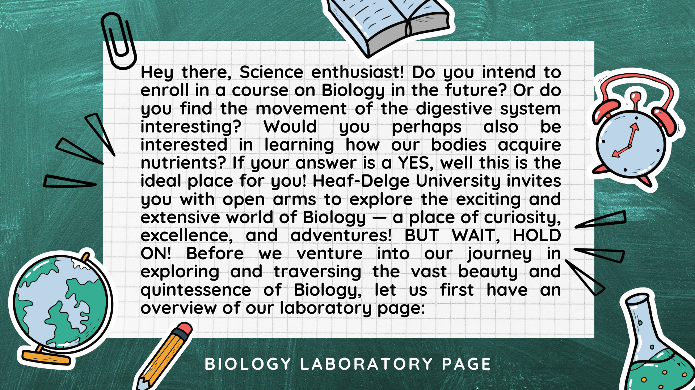

A part of Heaf-Delge University's fervent goals for its bright and inquisitive students is to provide the top-notch education meant to stimulate and cultivate one's interest in the massive and fascinating world of Science. The laboratory page seeks to showcase and impart enlightenments, information, observations, and documentations that the students can look back from time to time through various discussions, observations, and experiments which correlate to how the body functions with its various systems! Thus, the laboratory page desires to add fuel to the burning curiosity, interest, and passion of our dear students by providing a glimpse of the realm of Biology. Prepare as we embark ourselves in our journey of exploring and studying the perspective of Biology! In 5...4...3...2...1... We're going on a trip in our favorite rocket ship, zooming through the sky, Little Einstein!
Starting off with the digestive system, our bodies require food as fuel for development, repair, and energy. Foods are broken down into their most basic forms via the digestive system, such as glucose (sugars), amino acids (which form protein), or fatty acids (which produce lipids). The small intestine then absorbs the broken-down food into the bloodstream, where the nutrients are subsequently transported to every cell in the body. The mouth is where the digestive tract starts and ends at the anus. It resembles a lengthy, muscular tube that can reach a length of ten meters, to which the digestive organs are connected. Being the pathway through which nutrients enter the body, the digestive system is vital to your general well-being. A number of unpleasant symptoms, including indigestion, bloating, and stomach discomfort can arise from digestive health issues. Moreover, eating the wrong food may leave you malnourished, which can have a harmful and undesired effect on your health and general wellness. Our bodies' nutritional needs, which are in line with what is ideal for promoting healthy growth and development as well as the restoration of damaged tissues, are under our control and awareness. Simultaneously, monitoring our food intake raises our awareness of our health. We may restrict or enhance certain food selections to improve our immune system and effectively fight illnesses that may be lurking around the corner if we have the knowledge of what our food contains and how it interacts with our body.
Now, we present to you THE SIMULATION OF THE DIGESTIVE SYSTEM! This tool, meant for simulating how the digestive system functions and demonstrating and showcasing the roles that each organ acts, pledges to nourish students' minds and communicate prominent details that are very much needed to comprehend the basic functioning of the digestive system. Nonetheless, the simulation of the digestive system promotes interactiveness, excitement, thrill, and curiosity through its experiments that are to be performed and enacted by the students. This is to provide engagement and amusement in the midst of learning and exploring the realm and massive areas of Biology! Worry nothing if YOU GOT NOTHING IN YOUR BRAIN even if THAT'S WHAT PEOPLE SAY, for the simulation of the digestive system comes to the rescue, inviting you to explore the wonders of the digestive system and to inculcate further knowledge and enlightenment into your life!